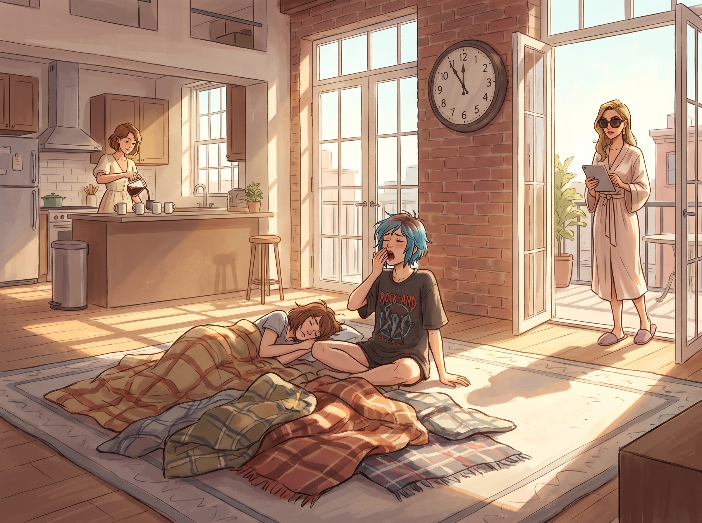

展後休整

從獲得海因斯教授特批展位、四人合力搭建起那座融合金屬、植物與影像的展區，到週五開幕當天引來全校轟動、Max 拿下最高榮譽評級，再到週日深夜撤展後，四人在天台燃起炭火、開香檳慶功直到深夜——這整個星期，過得像一場酣暢淋漓的夢。
週一上午十一點半，波特蘭初夏的陽光透過挑高的落地窗，大片大片地傾瀉在 Loft 的客廳地板上。
整間屋子安靜得只有老式掛鐘的滴答聲與微風拂過窗簾的沙沙響。客廳地毯上，四條羊毛毯歪七扭八地堆在一起，昨晚狂歡後的四個人直到將近正午才陸續從深沉的睡眠中甦醒。
Chloe 是第一個翻身坐起來的。她揉著睡得亂蓬蓬的藍髮，身上穿著印有搖滾樂隊的大號舊 T 恤，瞇著眼打了個長長的哈欠。身旁，Max 整個人像隻冬眠的小動物一樣把臉埋在枕頭裡，只有頭頂幾根呆毛在陽光下微微翹起。
「醒醒，大藝術家，太陽都曬到妳的膠卷上了。」Chloe 嘴角揚起一抹壞笑，伸手捏了捏 Max 的鼻尖。
「唔……五分鐘……」Max 閉著眼睛抓起被角擋住臉，發出軟綿綿的抗議。
這時，廚房方向傳來了咖啡豆研磨的細碎聲響與現烤麵包的香氣。
Kate 穿著柔軟的米白色棉麻長裙，已經梳理好整齊的短髮，正繫著圍裙將一壺剛萃取好的手沖耶加雪菲倒進四只大馬克杯裡。而剛洗漱完畢的 Victoria 則披著絲綢晨袍，踩著柔軟的羊皮拖鞋走上天台，戴著一副大墨鏡擋住強烈的陽光，手裡拿著平板電腦，整個人散發著一種「宿醉但依舊體面」的慵懶名媛氣場。
「好了，起床時間到。」Victoria 用指尖敲了敲木桌，聲音帶著剛醒時的微啞，「如果半小時內那些堆在天台角落的黃銅展架還沒被妥善歸位，我就叫廢品回收車把它們全拉走。」
半小時後，四人端著熱咖啡與烤得金黃酥脆的牛油果酸麵包吐司，齊聚在天台的木質露台上，開始了一場慢節奏的「展後休整行動」。
正午的陽光溫暖而不刺眼，微風吹動著欄杆旁的薄荷與迷迭香。
Chloe 嘴裡叼著吐司，手裡拿著小六角扳手，三兩下將昨天拆下來的那組重型黃銅懸臂展架重新固定在天台的紅磚牆上。「看，」Chloe 拍了拍金屬架，滿意地挑眉，「這下剛好拿來掛 Kate 的重型園藝澆水壺和老娘的備用皮夾克，承重一噸，絕不塌房。」
Kate 提著 Chloe 之前手工打造的木雕工具箱，小心翼翼地把從展廳撤回來的柴燒紅陶盆栽一盆盆搬回花架上，細心地給乾燥的迷迭香葉片噴灑水霧，嘴裡哼著輕快的聖歌小調。
Max 戴著黑框眼鏡盤腿坐在防潮墊上，用無酸硫酸紙套將參展的 16x20 大畫幅黑白銀鹽照片一張張小心封存。她的手指撫過那些定格著車間火星、晨露與水霧的畫面，眼底滿是平靜的滿足。
Victoria 陷在天台的藤編躺椅裡，一邊優雅地小口啜飲著黑咖啡，一邊在平板上滑動著西雅圖畫廊昨晚發來的後續郵件，偶爾抬頭斜睨一眼正把扳手在指尖轉得飛起的 Chloe，嘴角隱隱帶著笑意。
「不得不承認，」Victoria 忽然放下咖啡杯，輕輕推了推墨鏡，打破了天台的寧靜，「昨晚那些香檳的味道，比我在西雅圖任何一場無聊晚宴上喝到的都要好一點點。」
Chloe 轉過身，衝著 Victoria 誇張地吹了一聲口哨：「天哪，Chase 大小姐居然給出了四星半好評！看來昨天的烤肉徹底收買了妳的名媛胃。」
「少自作多情，Price，我只是在客觀評價那瓶香檳的年份。」Victoria 偏過頭輕哼了一聲，耳根卻泛起一抹不易察覺的微紅。
Max 咬著最後一口麵包，看著眼前沐浴在波特蘭明媚陽光下的三個人——忙碌中帶著得意的 Chloe、溫柔擦拭葉片的 Kate、傲嬌端著咖啡杯的 Victoria——心中湧起一股無比踏實的暖意。
沒有倒流的時間，沒有迫在眉睫的風暴，只有灑滿天台的陽光、微苦醇香的咖啡，以及彼此身邊觸手可及的真實生活。